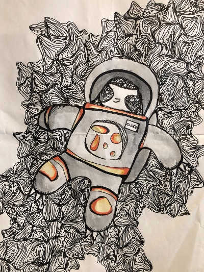

Want to see a sloth right now?
Check it out here
Learn more about it all!
We would love for you to learn more and there are so many great resources out there! Click below to find out more!
Learn MoreCheck it out here
We would love for you to learn more and there are so many great resources out there! Click below to find out more!
Learn MoreWe would love to hear from you and want to know your questions, address concernes, or just hear about your love for sloths as well!
Contact Us